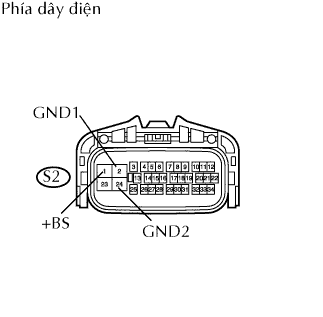

DTC C0278/11 Hở Mạch Trong Mạch Rơle Điện Từ Abs |
DTC C0279/12 Ngắn mạch với B+ trong Mạch Rơle Van điện từ ABS |
| Số mã DTC | Điều kiện phát hiện DTC | Khu vực nghi ngờ |
| C0278/11 | Khi phát hiện một trong các điều kiện sau đây: 1. Cả hai điều kiện liên tục trong ít nhất là 0.2 giây
|
|
| C0279/12 | Khi rơle OFF, bật khoá điện ON đóng tiếp điểm rơle ngay lập tức và liên tiếp ít nhất 0.2 giây. |
|
| 1.KIỂM TRA CẦU CHÌ (ALT, ABS NO. 2) |
Tháo các cẩu chì ALT và ABS NO.2 ra khỏi hộp đầu nối khoang động cơ.
Đo điện trở của các cầu chì H.
|
| ||||
| OK | |
| 2.KIỂM TRA DÂY ĐIỆN (ECU ĐIỀU KHIỂN TRƯỢT - ẮC QUY VÀ MÁT THÂN XE) |
|  |
Ngắt giắc nối S2 của ECU.
Đo điện áp của giắc nối phía dây điện.
| Nối dụng cụ đo | Điều kiện tiêu chuẩn |
| S2-1 (+BS) - Mát thân xe | 10 đến 14 V |
Đo điện trở của giắc nối phía dây điện.
| Nối dụng cụ đo | Điều kiện tiêu chuẩn |
| S2-2 (GND1) - Mát thân xe | Dưới 1 Ω |
| S2-24 (GND2) - Mát thân xe | Dưới 1 Ω |
|
| ||||
| OK | |
| 3.XÁC NHẬN LẠI MÃ DTC |
Xóa các mã DTC.
Lái xe với tốc độ 6 km/h (4 mph) trở lên.
Kiểm tra các mã DTC.
| Kết quả | Đi đến |
| DTC phát ra | A |
| DTC không phát ra | B |
|
| ||||
| A | ||
| ||